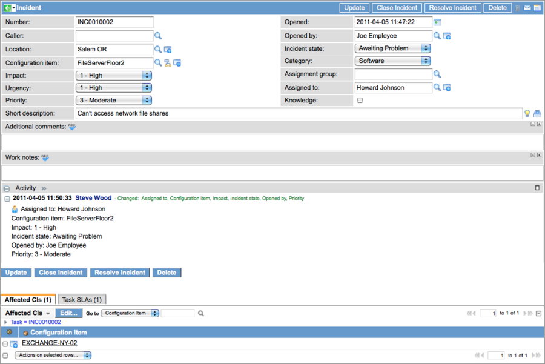

BSM Map Actions - Versions Prior to Eureka
Contents
1 Overview
Map actions in a Business Service Map contain scripts that define icons and context menu options that might appear on map nodes if those nodes meet the conditions specified by the Map Action. Icons can indicate trouble or other states such as collapsed nodes and clusters. Records that qualify as trouble are defined by Map Indicators. To access map actions, navigate to BSM Maps > Map Actions.
| |
Note: If you are using the Eureka or later version of the ServiceNow platform, see the related documentation in Business Service Management Map. |
2 How Map Actions Work
The system uses Map Action conditions to determine which menus options and icons to display on nodes in Business Service Maps. Map Actions are applied when a map is first displayed or when it is updated by the system using the Update interval timer in the Map Option dialog box.
{kind=link}
2.1 Using Map Indicators
Map Indicators determine which issues are considered trouble records. When the map is drawn, the following processing occurs:
- Map Indicators set the status of the node to trouble (this.getData("status") == "trouble'').
- Map Indicators set the annotations in the map nodes (this.getData("annotation_<table>_id") != ""). Annotations gather the IDs of all the records that are associated with the node.
- The appropriate Map Actions are applied to the map nodes.
3 Map Action Fields
The Map Action form provides the following fields:
| Field | Description |
| Name | Descriptive name that appears as a menu option or in the tooltip for an icon. |
| Type | Determines how the action is used - as an icon, a menu option, or a menu separator. |
| Icon | Select the icon image to display for a map action. |
| Condition | Specifies under which conditions the action in this record is available. The node is referenced in the condition by this in the parameter this.getData(). |
| Order | Defines the processing order of the action and the order in which options appear in context menus. |
| Script | Client script executed on the browser when the menu item or icon is selected (and the condition evaluates to true). The node is referenced in the script by this in the method this.getData(). |
The completed form for an icon Map Action looks like this:
{kind=link}
4 Menu Actions
Menu actions are options that appear in pop-up menus accessed by right-clicking on a map node. Actions that appear in the menu differ depending on how the map was accessed and the roles of the user accessing it. Menu options available for configuration items in the base system are:
- Manage Relationships: Edits the relationships for the selected (focus) node. See Defining CI Relationships for instructions on launching and using the relationship editor.
- Focus and Redraw: Redraws the map with the selected CI as the focus.
- Highlight Hierarchy: Highlights the CIs that depend on the selected CI and all CIs on which the selected CI is dependent.
- Show Tasks: Shows any tasks associated with this CI.
- Add Affected CI: Adds the selected CI to the Affected CI Related List in the incident currently being viewed. To view this option, open the map from the incident, and then right-click on the CI.
- Set as CI: Replaces the value in the original incident's reference field with the name of the selected CI. This action only appears for maps accessed from task records.
The order number in the action determines where the option appears in the menu.
{kind=link}
5 Icon Actions
Hover the cursor over the icon in the map to display the name of the map action in a tooltip. The icon Map Actions in the out-of-box system are:
 Expand CIs with issues: Expands a CI node to which issues (incidents, change requests, or outage records) are associated. This icon is not associated with clusters.
Expand CIs with issues: Expands a CI node to which issues (incidents, change requests, or outage records) are associated. This icon is not associated with clusters. Expand: Expands collapsed nodes.
Expand: Expands collapsed nodes. Collapse: Collapses expanded nodes.
Collapse: Collapses expanded nodes. Show Related Issues: Shows the related issues (incidents, change requests, or outage reports) for a CI.
Show Related Issues: Shows the related issues (incidents, change requests, or outage reports) for a CI.- Cluster Diagram: Displays a diagram for a cluster node.
 Show Related Outages: Shows a list of outage records for a CI.
Show Related Outages: Shows a list of outage records for a CI. Show Affected CIs: Displays a list of tasks associated with a specific CI node. In this action, the node has been identified as an Affected CI in a task record, such as an incident.
Show Affected CIs: Displays a list of tasks associated with a specific CI node. In this action, the node has been identified as an Affected CI in a task record, such as an incident.
6 Clusters Condition
To determine whether a node represents a cluster, use the following condition:
this.getData(“is_cluster”) == “true”
The node is referenced by this in the method this.getData(). When the condition evaluates to true for a node, the Cluster Diagram icon ( ) is displayed, which provides access to a secondary diagram of the component CIs in the cluster.
) is displayed, which provides access to a secondary diagram of the component CIs in the cluster.
7 How it Works Together
In this example, we use indicators and actions from a base system to display trouble records for a CI node of an affected CI in a Business Service Map. An affected CI has been identified in the Affected CI Related List of a task record, such as in incident. The records involved are:
- The Map Indicator record for the CI's affected [task_ci] table.
{kind=link}
- The Map Action, Show affected CI, which displays the trouble records for the node of an Affected CI. The first part of the condition statement in this record, this.getData('is_collapsed') != 'true', specifies that the node must be not collapsed. The second part, this.getData("status") == "trouble", is true only if the selected node has trouble records. The last part of the condition, this.getData("annotation_task_ci_id") != "", looks for trouble records in the task_id table for the selected CI.
{kind=link}
- Open an incident and add an Affected CI that has an existing map associated with it.
- For our example, we use EXCHANGE-NY-02 as the Affected CI.
- 
- Navigate to BSM Map > View Map.
- Select Email in the CI reference picker.
- Click the icon to display the list of tasks for the Affected CI.
{kind=link}
{kind=link}
{kind=link}